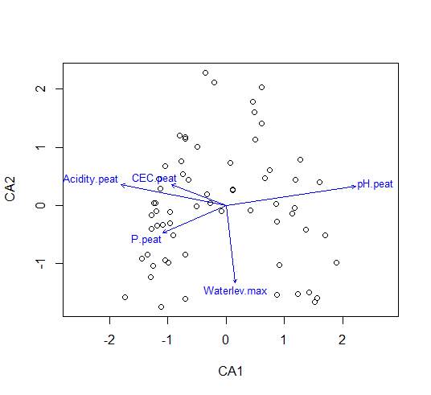
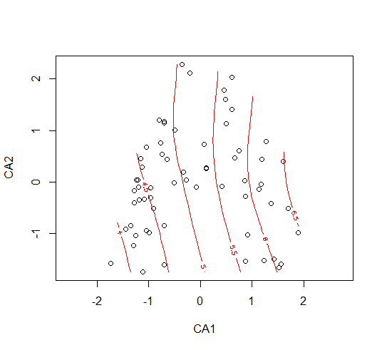
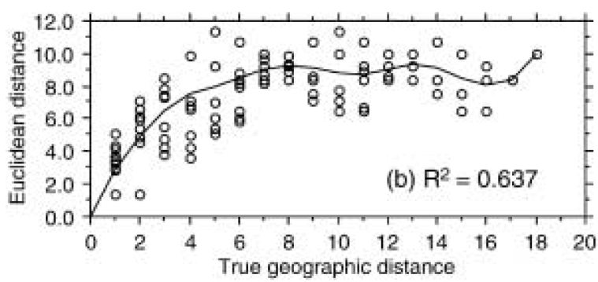
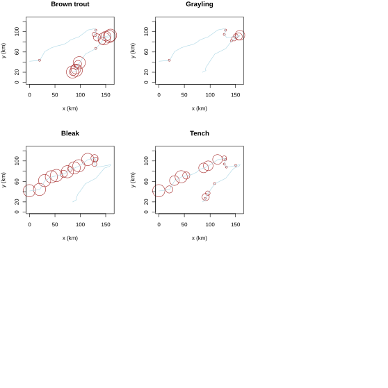
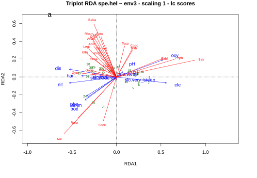
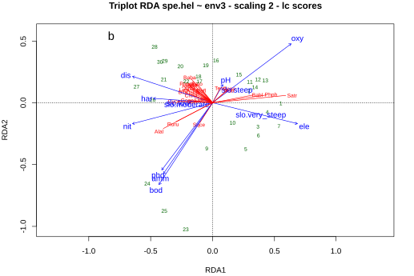

Statistik 7
Ordinationen II
In Statistik 7 beschäftigen wir uns zunächst damit, wie wir Ordinationsdiagramme informativer gestalten können, etwa durch die Beschriftung der Beobachtunge, post-hoc-Projektion der Prädiktorvariablen oder Response surfaces. Während wir bislang mit “unconstrained” Ordinationen gearbeitet haben, welche die Gesamtvariabilität in den Beobachtungen visualisieren, beschränken die jeweiligen “constrained”-Varianten derselben Ordinationsmethoden die Betrachtung auf den Teil der Variabilität, welcher durch eine Linearkombination der berücksichtigen Prädiktoren erklärt werden kann. Wir beschäftigen uns im Detail mit der Redundanz-Analyse (RDA), der “constrained”-Variante der PCA und gehen einen kompletten analytischen Ablauf mit Aufbereitung, Interpretation und Visualisierung der Ergebnisse am Beispiel eines gemeinschaftsökologischen Datensatzes (Fischgesellschaften und Umweltfaktoren im Jura-Fluss Doubs) durch.
Lernziele
Interpretation von Ordinationsergebnissen
Beschriftung der Variablen
Die Interpretation eines Ordinationsdiagramms wird durch Beschriftung der Variablen (und ggf. der Beobachtungen) wesentlich unterstützt. Bei der Ordination von gemeinschaftsökologischen Daten stellen allerdings die grosse Zahl der Artnamen und ihre grosse Länge eine Herausforderung dar. Wenn man in unserem Moordatensatz aus der letzten Lektion mit seinen 119 Arten einfach alle ungefiltert und ungekürzt in das Diagramm plotten würde, wären weder die Punkte des Diagramms erkennbar, noch die Namen lesbar. Insofern bietet es sich an, eine Teilmenge besonders aussagekräftiger Arten (d. h. Variablen) auszuwählen. Mit dem in vegan implementierten Befehl make.cepnames werden diese auf 8 Buchstaben gekürzt (4 vom Gattungsnamen und 4 vom Artepithet), was in fast allen Fällen eindeutig ist. Zudem kann man die relative Position der Beschriftung zum jeweiligen Punkt durch den Parameter pos steuern (oben, unten, rechts, links)).
# 4+4-Abkürzung der Namen
snames <- make.cepnames(snames)
# Individuelle Position der Namen
text(sx,sy,snames,pos=c(1,2,1,1,3,2,4,3,1),cex=0.8)
Post hoc-Korrelation von Umweltvariablen
In gemeinschaftsökologischen Datensätzen ist eine wichtige Frage meist, welche Umweltvariablen für die Verteilung der Arten in den Gemeinschaften/Vegetationsaufnahmen verantwortlich sind. Zur Rekapitulation: unsere bisherigen Ordinationsmethoden haben einzig die Artenvorkommen als Informationen (Variablen) genutzt. Eine Interpretationen der dahinterliegenden Umweltgradienten geschah bislang nur auf Basis unseres ökologischen Wissens über die Arten (sofern vorhanden). Sofern es jedoch auch erhobene Umweltdaten zu jeder Beobachtung gibt, können wir diese nachträglich (post hoc) zur Interpretation heranziehen. Wichtig ist dabei, dass diese zusätzlichen Umweltvariablen hier nicht die eigentliche Ordination beeinflusst haben, sondern nur zur nachträglichen Interpretation herangezogen werden (daher post hoc). Für unseren Moordatensatz gibt es tatsächich auch einen zusätzlichen Datensatz mit Umweltvariablen, die in jeder Vegetationsaufnahme erhoben wurden (enthalten im data frame ssit). Wir wählen davon fünf aus, um das Prinzip post hoc-gefitteter Umweltvariablen im Fall einer CA vorzustellen:
sel.sites <- c("pH.peat", "Acidity.peat", "CEC.peat", "P.peat", "Waterlev.max")
ev <- envfit(ca, ssit[,sel.sites])
plot(ca, display = "sites", type = "point")
plot(ev, add=T, cex=0.8)
Response surfaces
Die nachträglich gefitteten Vektoren der Umweltvariablen suggerieren allerdings eine Linearität im Ordinationsraum, die oftmals nicht gegeben ist. Daher ist es oft angemessener stattdessen Response surfaces zu visualisieren, was mit dem Befehl ordisurf in vegan geht. Diese werden vom Programm mit GAMs gefittet. Allerdings kann man so kaum mehr als zwei Variablen auf einmal darsellen, weswegen die Variante mit den Vektorpfeilen oben weiterhin ihre Berechtigung hat:
plot(ca, display = "sites", type = "point")ordisurf(ca, ssit$pH.peat, add=T)
Zeitliche Entwicklung
Besonders aufschlussreich können Ordinationen von gemeinschaftsökologischen Daten sein, wenn zeitliche Entwicklungen analysiert, d. h. die gleiche Gemeinschaft mehrfach im Abstand von Jahren oder Jahrzehnten erhebt. Dies zeigt die Abbildung aus einer unserer Publikationen, wo 16 Vegetationsaufnahmen aus vier verschiedenen Vegetationstypen im Abstand von zwanzig Jahren wieder aufgenommen wurden. Die Vegetationstypen sind farbig codiert, die alten Aufnahmen gestrichelt, die neuen gefüllt und die Richtung der Veränderung wurde für jeden Vegetationstyp als Vektor zwischen dem alten und neuen Zentroid des Vegetationstyps dargestellt. Der zugehörige R-Code ist allerdings etwas komplexer, so dass wir ihn hier nicht besprechen:

Einführung Constrained Ordinations
Bislang haben wir mit normalen (unconstrained) Ordinationen gearbeitet, was das gängige Verfahren für Datensätze aus allen Disziplinen ist. Hier wurde die Transformation des ursprünglichen n-dimensionalen Hyperraumes auf eine oder wenige Ordinationsebenen allein basierend auf den Informationen in unseren Variablen vorgenommen.
Im Fall von gemeinschaftsökologischen Daten sind unsere Variablen die einzelnen Arten (bzw. deren Häufigkeit in den einzelnen Gemeinschaften/Vegetationsaufnahmen). In diesem Fall interessiert uns aber oft primär, welche Umweltvariablen für das sich ergebende Ordinationsmuster hauptsächlich verantwortlich sind. Dafür können wir zwei Wege wählen:
- Wir können post hoc die Umweltvariablen als Vektoren oder Response surfaces in das Ordinationsdiagramm plotten, das ohne sie gerechnet wurde (siehe voriges Kapitel).
- Wir können die Umweltvariablen schon direkt bei der Berechnung der Ordination einbeziehen. Dann spricht man von einer “constrained” = “canonical” Ordination. Diese betrachtet nur den Anteil der Artverteilungsmuster, der durch die erhobenen Umweltvariablen erklärt werden kann.
Für die beiden wesentlichen besprochenen Ordinationsverfahren PCA (für lineare Beziehungen) und CA (für unimodale Beziehungen) gibt es jeweils eine unconstrained- und eine constrained-Variante (siehe Tabelle 7.1).
| Unconstrained | Constrained | |
|---|---|---|
| Linear | Principal Component Analysis (PCA) | Redundancy Analysis (RDA) |
| Unimodal | Correspondence Analysis (CA) | Canonical Correspondence Analysis (CCA) |
Das Prinzip und der konzeptionelle Ablauf einer “constrained” Ordination sei am Beispiel eines gemeinschaftsökologischen Datensatzes kurz skizziert:
- Man hat für jede Vegetationsaufnahme (o. ä.) zusätzlich zu den Artdaten (abhängige Variablen) ein Set von dort erhobenen Umweltvariablen (unabhängige Variablen).
- Zunächst werden die Artmächtigkeiten der einzelnen Arten zu den betrachteten Umweltvariablen jeweils mit einer multiplen linearen Regression in Beziehung gesetzt.
- Für die Ordination (PCA bzw. CA) werden dann statt der tatsächlichen Artmächtigkeiten die von der multiplen Regression vorhergesagten Artmächtigkeiten genommen
- Man kann anschliessend ermitteln, wie viel der Gesamtvarianz durch die verwendeten Umweltvariablen erklärt wird
In R passiert all das automatisch, wenn wir in vegan z. B. den Befehl cca für Canonical Correspondence Analysis wählen:
s5 <- c("pH.peat","P.peat","Waterlev.av","CEC.peat","Acidity.peat")
ssit5 <- ssit[s5]
o.cca <- cca(sveg~. ,data=ssit5)
plot(o.cca)
Redundancy Analysis (RDA) im Detail
Die Idee
Wir schauen uns nun die Redundanzanalyse (RDA) im Detail an, welche die “constrained”-Variante der Hauptkomponentenanalyse (PCA) ist (deswegen werden in vegan beide mit dem gleichen Befehl rda gerechnet, vgl. Statistik 6).
Eine RDA wird für Datensätze angewandt, in denen man zahlreiche Objekte (observations) mit jeweils vielen abhängigen und vielen unabhängigen Variablen hat und erklären will, welche von den unabhängigen Variablen für die multivariate Antwort verantwortlich sind.
Zwei typische Beispie sollen das Prinzip verdeutlichen, das natürlich auch in anderen Disziplinen auftreten kann (Die Tilde ~ wird hier in typischer R-Schreibweise genutzt, um die abhängigen Variablen links von den unabhängigen rechts zu trennen):
- Zusammensetzung von Pflanzengesellschaften (Anteile von Arten in Probeflächen) ~ Umweltparameter in diesen Probeflächen
- Politische Einstellungen von Menschen (z. B. als Beantwortung diverser Fragen auf einer Skala) ~ sozioökonomische Eigenschaften dieser Personen (z. B. Geschlecht, Alter, Bildung, Einkommen, Wohnort,…)
Notwendige Datentransformation für gemeinschaftsökologische Daten
Wir erinnern uns, dass in Statistik 5, von der Verwendung der PCA im Fall von gemeinschaftsökologischen Daten generell abgeraten wurde. Eine Hauptursache für die schlechte Eignung in diesen Fällen, ist dass die PCA (und damit auch die RDA) standardmässig mit der euklidischen Distanz zwischen zwei Objekten arbeitet, also der Länge der Gerade zwischen den beiden Objekten im multivariaten Raum (im zweidimensionalen Fall wäre das die Hypothenuse des rechtwinkligen Dreiecks, das durch die x/y-Koordinaten der beiden Beobachtungen gebildet wird; die Entfernung (= euklidische Distanz) berechnet sich dann einfach mit dem Satz des Pythagoras, analog auch für alle höheren Dimensionen). Für Daten von Artengemeinschaften (mit typischerweie vielen Nullwerten und unimodalen Verteilungen) ist die euklidische Distanz aber ungeeignet, da sie unerwünschte Artefakte (wie den diskutierten Hufeiseneffekt) erzeugt.
Dies haben Legendre & Gallagher (2001) schön mit einer Simulation gezeigt. Zugleich konnten sie zeigen, dass ein anderes Distanzmass, die Hellinger-Distanz diese Probleme in viel geringerem Umfang hat. Hier zunächst noch einmal die Definition der beiden Distanzmasse, mit x1, x2: Standort, j = 1… p: Arten, yi,j: Artmächtigkeit Art j an Standort i:
Euklidische Distanz:
\[ D_{\text{Euclidean}}(x'_{1},x'_{2})=\sqrt{\sum_{j=1}^p(y'_{1 j}-y'_{2 j})^2} \]
Hellinger-Distanz:
\[ D_{Hellinger}(x_1, x_2) = \sqrt{\sum_{j=1}^p\left[\sqrt{\frac{y_{1 j}}{y_{1+}}}-\sqrt{\frac{y_{2 j}}{y_{2+}}}\right]^2} \]
Um das “Verhalten” dieser beiden Distanzmasse wurde ein Datensatz mit einem geografischen bzw. Umweltgradienten simuliert, entlang dem insgesamt neun Arten mit unimodalen Verteilungen (ungefähr Gauss’schen response curves) auftreten. Nach unserer Notation von Statistik 6 würden diese 19 Beobachtungspunkte (sites) zusammen einen Diversitätsgradienten von mehr als 8 SD-Einheiten repräsentieren (d. h. zwei vollständige Artenturnovers, vgl. die Kurven für Species 2 and Species 4). Wie man sieht, ist die Rangkorrelation zwischen Distanzmass und tatsächlicher geographischer Distand nach erfolgter Hellinger-Transformation viel besser (95 %), allerdings findet auch hier bei einer geografischen Distanz > 8 keine weitere Differenzierung statt, da die Artengemeinschaften dann keine gemeinsame Art mehr haben.



Die Schlussfolgerung ist, dass man mit der Hellinger-Distanz auch für gemeinschaftsökologische Daten RDAs (und PCAs) andwenden kann.
Ein Beispiel
Unser Beispiel stammt aus dem sehr empfehlenswerten Buch von Borcard et al. (2018), das insbesondere deskriptiv-multivariate Verfahren im Bereich der Ökologie umfangreich erklärt und dazu die R-Codes liefert:
Einer der Datensätze aus dem Buch beschreibt die Fischgemeinschaften an 30 Probestellen (sites) des Flusses Doubs im schweizerisch-französischen Grenzgebiet. An allen Probestellen wurden relative Abundanzen von 27 Fischarten (jeweils 0–5; dependent variables) und 11 Umweltvariablen (independent variables) erhoben. Die folgende Abbildung zeigt für vier häufige Arten die Vereilungsmuster in simplen R-genierten Kärtchen:

Generelles zum rda-Befehl
Hier seien kurz drei Syntax-Varianten des rda-Befehls im Package vegan vorgestellt:
simpleRDA <- rda (Y, X, W)Y: Antwort-MatrixX: Matrix der erklärenden Variablen (nur numerisch)W: Matrix der Co-Variablen (optional, für partielle RDAs)
formulaRDA <- rda (Y ~ var1 + factorA + var2\*var3 + Condition(var4),
data = Xwdata)Hier auch möglich - Faktoren (d. h. kategoriale Variable) - Interaktionen
spe.rda <- rda (spe.hel ~ ., env3)Kurzschreibweise - → bedeutet: alle Variablen aus dataframe env3
Interpretation der Ergebnisse
Wir schauen uns nun die Ergebnisse an, wenn wir die RDA mit Hellingertransformierten Arthäufigkeiten und allen 10 Umweltvariablen rechnen:
rda(formula = spe.hel ~ ele + slo + dis + pH + har +
pho + nit + amm + oxy + bod, data = env3) Partitioning of variance:
Inertia Proportion
Total 0.5025 1.0000
Constrained 0.3654 0.7271
Unconstrained 0.1371 0.2729Wie wir sehen, enthält der erste Teil des Ergebnis-Outputs eine Varianzpartitionierung. Die Gesamtvarianz wird aufgeteilt in jenen Anteil der durch die Umweltvariablen erklärt wird (constrained) und die unerklärte Restvarianz (unconstrained). Der Wert entspricht \(R^2\) in linearen Modellen, hat aber einen bias (s. u.).
Der Output geht wie folgt weiter:
Importance of components:
RDA1 RDA2 RDA3 RDA4 RDA5 RDA6
Eigenvalue 0.2281 0.0537 0.03212 0.02321 0.008699 0.007218
Proportion Explained 0.4539 0.1069 0.06392 0.04618 0.017311 0.014363
Cumulative Proportion 0.4539 0.5607 0.62466 0.67084 0.688155 0.702518
[…]
RDA12 PC1 PC2 PC3 PC4
Eigenvalue 0.0003405 0.04581 0.02814 0.01528 0.01399
Proportion Explained 0.0006776 0.09116 0.05601 0.03042 0.02784
Cumulative Proportion 0.7270922 0.81825 0.87425 0.90467 0.93251Wir sehen 12 RDA-Achsen (12 statt 10, da eine der Variablen ein Faktor war, der in drei dummy-Variablen zerlegt wurde). Die restliche Varianz findet sich dann auf den “unconstrained”-Achsen, die mit PC1, PC2 usw. benannt sind. Die Varianz auf diesen Achsen steht für nicht gemessene Variablen (oder auch Interkationen und unimodale Beziehungen dergemessenen Variablen).
Accumulated constrained eigenvalues
Importance of components:
RDA1 RDA2 RDA3 RDA4 RDA5 RDA6
Eigenvalue 0.2281 0.0537 0.03212 0.02321 0.008699 0.007218
Proportion Explained 0.6243 0.1470 0.08791 0.06351 0.023808 0.019755
Cumulative Proportion 0.6243 0.7712 0.85913 0.92264 0.946448 0.966202In diesem Fall erklärt die erste RDA-Achse schon ungewöhnlich hohe 62% der Gesamtvarianz, mit der zweiten Achse zusammen gar 77%. Der Output geht aber noch weiter…
Scaling 2 for species and site scores
* Species are scaled proportional to eigenvalues
* Sites are unscaled: weighted dispersion equal on all dimensions
* General scaling constant of scores: 1.93676
Species scores
RDA1 RDA2 RDA3 RDA4 RDA5 RDA6
Cogo 0.13386 0.11619 -0.238205 0.018531 0.043161 -0.029728
Satr 0.64240 0.06654 0.123649 0.181606 -0.009584 0.029785
Phph 0.47477 0.07009 -0.010153 -0.115349 -0.045312 -0.030034
Babl 0.36260 0.06966 0.041311 -0.190563 -0.046944 0.006446
Thth 0.13081 0.10707 -0.239273 0.043512 0.065818 0.003468
[…]Species scores sind die Koordinaten der Spitzen von Artvektoren in Bi- und Triplots. Es gibt zwei Scaling-Optionen, wobei Scaling 2 der default ist. Und es geht noch weiter:
Site scores (weighted sums of species scores)
RDA1 RDA2 RDA3 RDA4 RDA5 RDA6
1 0.40149 -0.154133 0.55506 1.601005 0.193044 0.916850
2 0.53522 -0.025131 0.43393 0.294832 -0.518997 0.458849
3 0.49429 -0.014617 0.49415 0.169258 -0.246061 0.163409
4 0.33451 0.001188 0.51644 -0.320793 0.089569 -0.219820Site scores sind die Koordinaten der Untersuchungsflächen im Raum der abhängigen Variablen Y (hier also der Arten).
Site constraints (linear combinations of constraining variables)
RDA1 RDA2 RDA3 RDA4 RDA5 RDA6
1 0.55130 0.002681 0.47744 0.626961 -0.210684 0.31503
2 0.29736 0.105880 0.64854 0.261364 -0.057127 0.09312
3 0.36843 -0.185333 0.59805 0.324556 -0.001611 0.31093
4 0.44346 -0.066361 0.33293 -0.344230 -0.279546 -0.37077Site constraints sind die Koordinaten der Untersuchungsflächen im Raum der Prädiktorvariablen X (hier also der Umweltvariablen).
Während dieser primäre Output schon sehr aufschlussreich war, gibt es noch weitere Dinge, die uns interessieren (sollten):
coef(spe.rda) RDA1 RDA2 RDA3
ele 0.0004483347 7.795777e-05 0.0005188756
slo.moderate -0.0123140760 -1.655649e-02 0.0160736225
slo.steep 0.0480170930 4.905556e-02 0.1023432587
slo.very_steep 0.0181630025 -5.708251e-02 0.2326204779
dis -0.0014041126 4.456720e-03 0.0089169975coef (spe.rda) sind die Regressionskoeffizienten der Variablen zu den Achsen.
# Unadjusted R^2 und Adjusted R^2
(R2 <- RsquareAdj(spe.rda))$r.squared
[1] 0.7270922
$adj.r.squared
[1] 0.5224114Der originale (unadjusted) \(R^2\) ist derselbe, den wir oben im Haupt-Output bekommen haben. R2-adjusted dagegen misst die erklärte Varianz ohne bias (bias resultiert daraus, dass bei vielen Variablen zwischen diesen auch rein zufällig Korrelationen auftreten).
Visualisierung der Ergebnisse
Die Ergebnisse einer RDA werden mit einem sogenannten Triplot visualisiert, bei dem alle drei Aspekte, Arten (sp), die herangezogenen Umweltvariablen (“constraints”, cn) und die Beobachtungen (“sites”), gemeinsam geplottet werden. Das geschieht mit dem plot ()-Befehl angewandt auf das RDA-Objekt. Da eine RDA ein statistisch komplexes Verfahren ist, gibt es nicht nur eine Art und Weise, die Ergebnisse zu visualisieren, sondern mehrere. Einerseits kann man bezüglich “sites” entscheiden, ob diese als “lc” (gefittete Werte als Linearkombination der Umweltvariablen) oder als “wa” (Lage im Raum der Artdaten, berechnet mit weighted averaging). Weiter gibt es “Scaling 1” und “Scaling 2”, deren Unterschiede im Folgenden stichpunktartig erklärt sind. “Scaling 1” eignet sich meist besser für die Visualisierung von Objekten (sites) und “Scaling 2” meist bessser für die Visualisierung von Antwortvariablen (species). Borcard et al. (2018) erläutern die Implikationen der Wahlen im Detail und empfehlen als angemessene Lösung in den meisten Fällen die Kombination von “lc” und “Scaling 2”.
Distanz-Triplot (Scaling 1):

- Winkel zwischen Antwort- und erklärenden Variablen entsprechen deren Korrelationen (aber nicht jene zwischen Antwortvariablen)
- Die Beziehung von Zentroiden qualitativer Variablen (Faktoren) und Antwortvariablen ergibt sich aus der Projektion der Zentroide im rechten Winkel auf die Anwortvariable.
- Distanzen zwischen Zentroiden und zwischen individuellen Objekten (sites) entsprechen ungefähr deren Distanzen im multivariaten Raum.
Korrelations-Triplot (Scaling 2):

- Die Projektion eines Objektes im rechten Winkel auf eine Antwort- oder eine numerische Prädiktorvariable entspricht dessen Wert entlang dieser Achse.
- Winkel zwischen Antwort- und erklärenden Variablen wie auch innerhalb beider Gruppen entsprechen deren Korrelationen
- Die Beziehung eines Zentroids einer qualitativen Variablen und der Antwortvariablen, ergibt sich aus seiner rechtwinkligen Projektion auf letztere.
- Distanzen zwischen Zentroiden und zwischen individuellen Objekten (sites) entsprechen nicht deren Distanzen im multivariaten Raum.
Signifikanz der Achsen
Eine RDA produziert immer viele Achsen, aber die entscheidende Frage ist, welche davon signifikant sind (eine Frage, die wir nur im Falle von constrained-Ordinationen stellen können, da diese im Gegensatz zu den rein deskriptiven unconstrained-Ordinationen eine inferenzstatistische Komponente haben). Da die Voraussetzungen parametrischer Tests in der Regel massiv verletzt sind, kann die Signifikanz nur mit Permutationen gestestet werden:
# Global test of the RDA result
anova(spe.rda, permutations = how(nperm = 999))Permutation test for rda under reduced model
Permutation: free
Number of permutations: 999
Model: rda(formula = spe.hel ~ ele + slo + dis + pH + har +
pho + nit + amm + oxy + bod, data = env3)
Df Variance F Pr(>F)
Model 12 0.36537 3.5523 0.001 ***
Residual 16 0.13714# Tests of all canonical axes
anova(spe.rda, by = "axis", permutations = how(nperm = 999))Permutation test for rda under reduced model
Forward tests for axes
Permutation: free
Number of permutations: 999
Model: rda(formula = spe.hel ~ ele + slo + dis + pH + har +
pho + nit + amm + oxy + bod, data = env3)
Df Variance F Pr(>F)
RDA1 1 0.228083 26.6105 0.001 ***
RDA2 1 0.053698 6.2649 0.004 **
RDA3 1 0.032119 3.7473 0.333
RDA4 1 0.023206 2.7074 0.775
RDA5 1 0.008699 1.0149 1.000 Wir sehen, dass in diesem Fall die ersten beiden Achsen (RDA1, RDA2) signifikant sind. Nur diese sollten abgebildet werden!
Partielle RDA und Varianzpartitionierung
Bei vielen Umweltvariablen können ggf. partielle RDAs aufschlussreich sein, die im Prinzip analog zu partiellen Regressionsplots (vgl. Statistik 3) funktionieren. Man kann dies für einzelne Variablen oder für Gruppen von Variablen machen. Zum Beispiel könnten wir fragen: Wie viel von der Zusammensetzung der Firschgemeinschaften erklärt die Wasserchemie, wenn man die topografischen Variablen konstant hält? Mit vegan geht das folgendermassen, einschliesslich Visualisierung in einem sogenannten Venn-Diagramm:
# Formula interface; X and W variables must be in the same
# data frame
(spechem.physio2 <-
rda(spe.hel ~ pH + har + pho + nit + amm + oxy + bod +
Condition(ele + slo + dis), data = env2))
anova(spechem.physio2, permutations = how(nperm = 999))
anova(spechem.physio2, permutations = how(nperm = 999), by = "axis")
(spe.part.all <- varpart(spe.hel, envchem, envtopo))
# Plot of the partitioning results
dev.new(title = "Variation partitioning - all variables", noRStudioGD = TRUE)
plot(spe.part.all, digits = 2, bg = c("red", "blue"),
Xnames = c("Chemistry", "Physiography"),
id.size = 0.7)
Das Venn-Diagramm visualisiert die Varianzaufteilung zwischen zwei (oder mehr Variablen oder Gruppen von Variablen). Hier erkären die chemischen Variablen 24 %, die pysiographischen (topographischen) 11 % jeweils unabhängig voneinander, wohingegen ein grosser Teil der Varianz (23 %) von beiden Variablengruppen gemeinsam erklärt wird (weil sie nicht völlig unkorreliert sind).
Zusammenfassung
Weiterführende Literatur
- Borcard, D., Gillet, F. & Legendre, P. 2018. Numerical ecology with R. 2nd ed. Springer, Cham: 435 pp. [mit R]
- Everitt, B. & Hothorn, T. 2011. An introduction to applied multivariate analysis with R. Springer, New York: 273 pp. [mit R]
- Legendre, P. & Gallagher, E.D. 2001. Ecologically meaningful transformation for ordination of species data. Oecologia 129: 271–280.
- Leyer, I. & Wesche, K. 2007. Multivariate Statistik in der Ökologie. Springer, Berlin: 221 pp. [einfache Erklärung von Ordinationsmethoden, ohne R]
- McCune, B., Grace, J.B. & Urban, D.L. 2002. Analysis of ecological communities. MjM Software Design, Gleneden Beach, Oregon, US: 300 pp. [gut erklärte und detaillierte Einführung in Ordinationen u.a., ohne R]
- Oksanen, L. 2015. Multivariate analysis of ecological communities in R: vegan tutorial. URL: http://cc.oulu.fi/~jarioksa/opetus/metodi/vegantutor.pdf. [gute Einführung in das R-package vegan mit vielen Ordinationsmethoden]
- Wildi, O. 2017. Data analysis in vegetation ecology. 3rd ed. CABI, Wallingford, UK: 333 pp. [mit R]
Quellen des Beispiels
Hüllbusch, E., Brandt, L.M., Ende, P. & Dengler, J. 2016. Little vegetation change during two decades in a dry grassland complex in the Biosphere Reserve Schorfheide-Chorin (NE Germany). Tuexenia 36: 395−412.